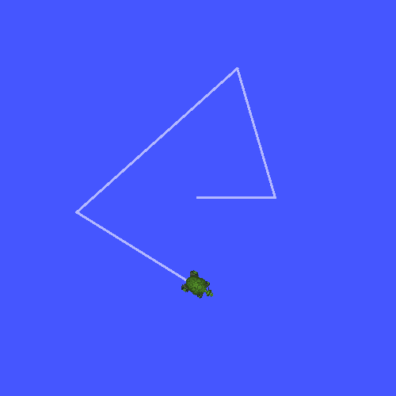

Writing a broadcaster (C++) [待校准@14757]
Goal: Learn how to broadcast the state of a robot to tf2. [待校准@14758]
Tutorial level: Intermediate [待校准@14046]
Time: 15 minutes [待校准@12267]
Contents [待校准@12037]
Background [待校准@11832]
In the next two tutorials we will write the code to reproduce the demo from the Introduction to tf2 tutorial. After that, following tutorials focus on extending the demo with more advanced tf2 features, including the usage of timeouts in transformation lookups and time travel. [待校准@14759]
Prerequisites [待校准@11884]
This tutorial assumes you have a working knowledge of ROS 2 and you have completed the Introduction to tf2 tutorial and tf2 static broadcaster tutorial (C++). In previous tutorials, you learned how to create a workspace and create a package. You also have created the learning_tf2_cpp package, which is where we will continue working from. [待校准@14760]
Tasks [待校准@12042]
1 Write the broadcaster node [待校准@14761]
Let's first create the source files. Go to the learning_tf2_cpp package we created in the previous tutorial. Inside the src directory download the example broadcaster code by entering the following command: [待校准@14762]
wget https://raw.githubusercontent.com/ros/geometry_tutorials/ros2/turtle_tf2_cpp/src/turtle_tf2_broadcaster.cpp
wget https://raw.githubusercontent.com/ros/geometry_tutorials/ros2/turtle_tf2_cpp/src/turtle_tf2_broadcaster.cpp
In a Windows command line prompt: [待校准@13603]
curl -sk https://raw.githubusercontent.com/ros/geometry_tutorials/ros2/turtle_tf2_cpp/src/turtle_tf2_broadcaster.cpp -o turtle_tf2_broadcaster.cpp
Or in powershell: [待校准@13604]
curl https://raw.githubusercontent.com/ros/geometry_tutorials/ros2/turtle_tf2_cpp/src/turtle_tf2_broadcaster.cpp -o turtle_tf2_broadcaster.cpp
Open the file using your preferred text editor. [待校准@13693]
#include <functional>
#include <memory>
#include <sstream>
#include <string>
#include "geometry_msgs/msg/transform_stamped.hpp"
#include "rclcpp/rclcpp.hpp"
#include "tf2/LinearMath/Quaternion.h"
#include "tf2_ros/transform_broadcaster.h"
#include "turtlesim/msg/pose.hpp"
class FramePublisher : public rclcpp::Node
{
public:
FramePublisher()
: Node("turtle_tf2_frame_publisher")
{
// Declare and acquire `turtlename` parameter
turtlename_ = this->declare_parameter<std::string>("turtlename", "turtle");
// Initialize the transform broadcaster
tf_broadcaster_ =
std::make_unique<tf2_ros::TransformBroadcaster>(*this);
// Subscribe to a turtle{1}{2}/pose topic and call handle_turtle_pose
// callback function on each message
std::ostringstream stream;
stream << "/" << turtlename_.c_str() << "/pose";
std::string topic_name = stream.str();
subscription_ = this->create_subscription<turtlesim::msg::Pose>(
topic_name, 10,
std::bind(&FramePublisher::handle_turtle_pose, this, std::placeholders::_1));
}
private:
void handle_turtle_pose(const std::shared_ptr<turtlesim::msg::Pose> msg)
{
geometry_msgs::msg::TransformStamped t;
// Read message content and assign it to
// corresponding tf variables
t.header.stamp = this->get_clock()->now();
t.header.frame_id = "world";
t.child_frame_id = turtlename_.c_str();
// Turtle only exists in 2D, thus we get x and y translation
// coordinates from the message and set the z coordinate to 0
t.transform.translation.x = msg->x;
t.transform.translation.y = msg->y;
t.transform.translation.z = 0.0;
// For the same reason, turtle can only rotate around one axis
// and this why we set rotation in x and y to 0 and obtain
// rotation in z axis from the message
tf2::Quaternion q;
q.setRPY(0, 0, msg->theta);
t.transform.rotation.x = q.x();
t.transform.rotation.y = q.y();
t.transform.rotation.z = q.z();
t.transform.rotation.w = q.w();
// Send the transformation
tf_broadcaster_->sendTransform(t);
}
rclcpp::Subscription<turtlesim::msg::Pose>::SharedPtr subscription_;
std::unique_ptr<tf2_ros::TransformBroadcaster> tf_broadcaster_;
std::string turtlename_;
};
int main(int argc, char * argv[])
{
rclcpp::init(argc, argv);
rclcpp::spin(std::make_shared<FramePublisher>());
rclcpp::shutdown();
return 0;
}
1.1 Examine the code [待校准@12661]
Now, let's take a look at the code that is relevant to publishing the turtle pose to tf2. Firstly, we define and acquire a single parameter turtlename, which specifies a turtle name, e.g. turtle1 or turtle2. [待校准@14763]
turtlename_ = this->declare_parameter<std::string>("turtlename", "turtle");
Afterward, the node subscribes to topic turtleX/pose and runs function handle_turtle_pose on every incoming message. [待校准@14764]
subscription_ = this->create_subscription<turtlesim::msg::Pose>(
topic_name, 10,
std::bind(&FramePublisher::handle_turtle_pose, this, _1));
Now, we create a TransformStamped object and give it the appropriate metadata. [待校准@14765]
We need to give the transform being published a timestamp, and we'll just stamp it with the current time by calling
this->get_clock()->now(). This will return the current time used by theNode. [待校准@14766]Then we need to set the name of the parent frame of the link we're creating, in this case
world. [待校准@14767]Finally, we need to set the name of the child node of the link we're creating, in this case this is the name of the turtle itself. [待校准@14768]
The handler function for the turtle pose message broadcasts this turtle's translation and rotation, and publishes it as a transform from frame world to frame turtleX. [待校准@14769]
geometry_msgs::msg::TransformStamped t;
// Read message content and assign it to
// corresponding tf variables
t.header.stamp = this->get_clock()->now();
t.header.frame_id = "world";
t.child_frame_id = turtlename_.c_str();
Here we copy the information from the 3D turtle pose into the 3D transform. [待校准@14770]
// Turtle only exists in 2D, thus we get x and y translation
// coordinates from the message and set the z coordinate to 0
t.transform.translation.x = msg->x;
t.transform.translation.y = msg->y;
t.transform.translation.z = 0.0;
// For the same reason, turtle can only rotate around one axis
// and this why we set rotation in x and y to 0 and obtain
// rotation in z axis from the message
tf2::Quaternion q;
q.setRPY(0, 0, msg->theta);
t.transform.rotation.x = q.x();
t.transform.rotation.y = q.y();
t.transform.rotation.z = q.z();
t.transform.rotation.w = q.w();
Finally we take the transform that we constructed and pass it to the sendTransform method of the TransformBroadcaster that will take care of broadcasting. [待校准@14771]
// Send the transformation
tf_broadcaster_->sendTransform(t);
1.2 CMakeLists.txt [待校准@12673]
Navigate one level back to the learning_tf2_cpp directory, where the CMakeLists.txt and package.xml files are located. [待校准@14491]
Now open the CMakeLists.txt add the executable and name it turtle_tf2_broadcaster, which you'll use later with ros2 run. [待校准@14772]
add_executable(turtle_tf2_broadcaster src/turtle_tf2_broadcaster.cpp)
ament_target_dependencies(
turtle_tf2_broadcaster
geometry_msgs
rclcpp
tf2
tf2_ros
turtlesim
)
Finally, add the install(TARGETS…) section so ros2 run can find your executable: [待校准@11975]
install(TARGETS
turtle_tf2_broadcaster
DESTINATION lib/${PROJECT_NAME})
2 Write the launch file [待校准@14157]
Now create a launch file for this demo. With your text editor, create a new file called turtle_tf2_demo.launch.py in the launch folder, and add the following lines: [待校准@14773]
from launch import LaunchDescription
from launch_ros.actions import Node
def generate_launch_description():
return LaunchDescription([
Node(
package='turtlesim',
executable='turtlesim_node',
name='sim'
),
Node(
package='learning_tf2_cpp',
executable='turtle_tf2_broadcaster',
name='broadcaster1',
parameters=[
{'turtlename': 'turtle1'}
]
),
])
2.1 Examine the code [待校准@12051]
First we import required modules from the launch and launch_ros packages. It should be noted that launch is a generic launching framework (not ROS 2 specific) and launch_ros has ROS 2 specific things, like nodes that we import here. [待校准@14774]
from launch import LaunchDescription
from launch_ros.actions import Node
Now we run our nodes that start the turtlesim simulation and broadcast turtle1 state to the tf2 using our turtle_tf2_broadcaster node. [待校准@14775]
Node(
package='turtlesim',
executable='turtlesim_node',
name='sim'
),
Node(
package='learning_tf2_cpp',
executable='turtle_tf2_broadcaster',
name='broadcaster1',
parameters=[
{'turtlename': 'turtle1'}
]
),
2.2 Add dependencies [待校准@13613]
Navigate one level back to the learning_tf2_cpp directory, where the CMakeLists.txt and package.xml files are located. [待校准@14491]
Open package.xml with your text editor. Add the following dependencies corresponding to your launch file's import statements: [待校准@14776]
<exec_depend>launch</exec_depend>
<exec_depend>launch_ros</exec_depend>
This declares the additional required launch and launch_ros dependencies when its code is executed. [待校准@14777]
Make sure to save the file. [待校准@13619]
2.3 CMakeLists.txt [待校准@13620]
Reopen CMakeLists.txt and add the line so that the launch files from the launch/ folder would be installed. [待校准@14778]
install(DIRECTORY launch
DESTINATION share/${PROJECT_NAME})
You can learn more about creating launch files in this tutorial. [待校准@14779]
3 Build [待校准@14780]
Run rosdep in the root of your workspace to check for missing dependencies. [待校准@14498]
rosdep install -i --from-path src --rosdistro humble -y
rosdep only runs on Linux, so you will need to install geometry_msgs and turtlesim dependencies yourself [待校准@14499]
rosdep only runs on Linux, so you will need to install geometry_msgs and turtlesim dependencies yourself [待校准@14499]
From the root of your workspace, build your updated package: [待校准@14500]
colcon build --packages-select learning_tf2_cpp
colcon build --packages-select learning_tf2_cpp
colcon build --merge-install --packages-select learning_tf2_cpp
Open a new terminal, navigate to the root of your workspace, and source the setup files: [待校准@14501]
. install/setup.bash
. install/setup.bash
# CMD
call install\setup.bat
# Powershell
.\install\setup.ps1
4 Run [待校准@14781]
Now run the launch file that will start the turtlesim simulation node and turtle_tf2_broadcaster node: [待校准@14782]
ros2 launch learning_tf2_cpp turtle_tf2_demo.launch.py
In the second terminal window type the following command: [待校准@14579]
ros2 run turtlesim turtle_teleop_key
You will now see that the turtlesim simulation have started with one turtle that you can control. [待校准@14783]
Now, use the tf2_echo tool to check if the turtle pose is actually getting broadcast to tf2: [待校准@14784]
ros2 run tf2_ros tf2_echo world turtle1
This should show you the pose of the first turtle. Drive around the turtle using the arrow keys (make sure your turtle_teleop_key terminal window is active, not your simulator window). In your console output you will see something similar to this: [待校准@14785]
At time 1625137663.912474878
- Translation: [5.276, 7.930, 0.000]
- Rotation: in Quaternion [0.000, 0.000, 0.934, -0.357]
At time 1625137664.950813527
- Translation: [3.750, 6.563, 0.000]
- Rotation: in Quaternion [0.000, 0.000, 0.934, -0.357]
At time 1625137665.906280726
- Translation: [2.320, 5.282, 0.000]
- Rotation: in Quaternion [0.000, 0.000, 0.934, -0.357]
At time 1625137666.850775673
- Translation: [2.153, 5.133, 0.000]
- Rotation: in Quaternion [0.000, 0.000, -0.365, 0.931]
If you run tf2_echo for the transform between the world and turtle2, you should not see a transform, because the second turtle is not there yet. However, as soon as we add the second turtle in the next tutorial, the pose of turtle2 will be broadcast to tf2. [待校准@14786]
Summary [待校准@12113]
In this tutorial you learned how to broadcast the pose of the robot (position and orientation of the turtle) to tf2 and how to use the tf2_echo tool. To actually use the transforms broadcasted to tf2, you should move on to the next tutorial about creating a tf2 listener. [待校准@14787]